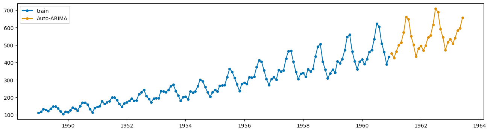
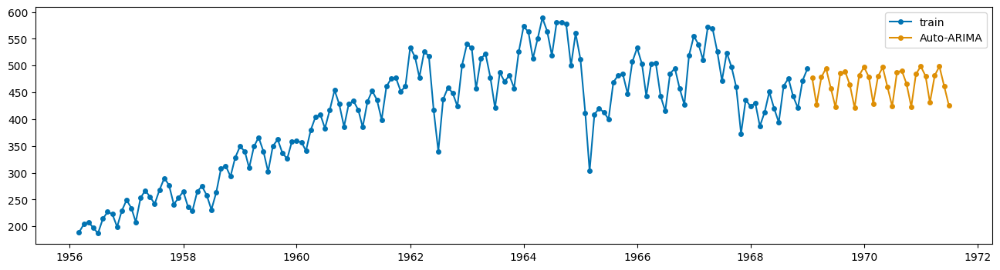
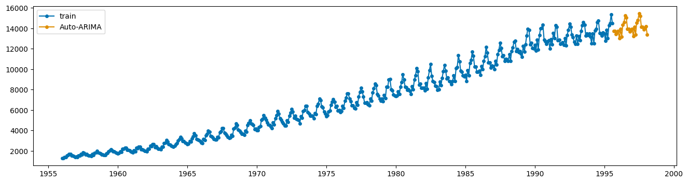
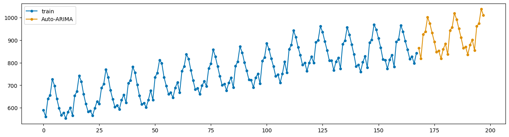
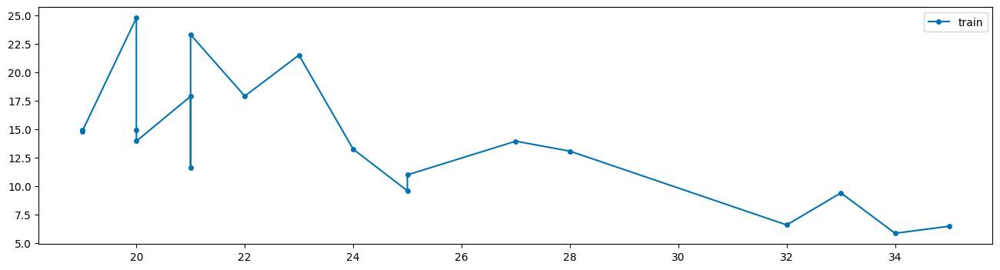
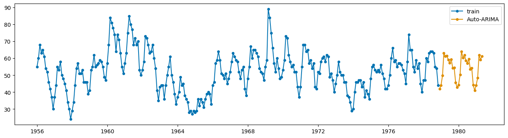

![]()
import numpy as np
import pandas as pd
from pandas import read_excel # funcion para leer archivos de excel
from io import StringIO
import contextlib
import re
import matplotlib.pyplot as plt
# statsmodels
import statsmodels
from statsmodels.tsa.statespace.sarimax import SARIMAX
from statsmodels.tsa.stattools import adfuller
from statsmodels.tsa.stattools import kpss
from statsmodels.graphics.tsaplots import plot_acf, plot_pacf
from statsmodels.tsa.seasonal import seasonal_decompose
import pmdarima as pm
from pmdarima import ARIMA
from pmdarima import auto_arima
import sktime
from sktime import datasets
from sktime.utils import plot_series
import warnings
warnings.filterwarnings("ignore")
import session_infoTaller - Sesion 5 - Series de Tiempo y Python IIE - UNAM
Abstract
Este Notebook incluye una introduccion al manejo de Series de Tiempo con Python
Keywords
Series de Tiempo, ARIMA, Python, R, Estadistica
#!pip install xlrd
#!pip install sktime
#!pip install seabornh=30df = pd.read_csv('AirPassengers.csv')
df1 = read_excel('ClayBricks.xls')
df2 = read_excel('Electricity.xls')
df3 = read_excel('MilkProduction.xls')
df4 = read_excel('JapaneseCars.xls')
df5 = read_excel('HouseSales.xls')Serie 1
dates=pd.to_datetime(df["Month"])
ts=pd.Series(np.array(df["#Passengers"]),index=dates)tsMonth
1949-01-01 112
1949-02-01 118
1949-03-01 132
1949-04-01 129
1949-05-01 121
...
1960-08-01 606
1960-09-01 508
1960-10-01 461
1960-11-01 390
1960-12-01 432
Length: 144, dtype: int64from pmdarima.datasets import load_wineind
# this is a dataset from R
wineind = load_wineind().astype(np.float64)len(wineind)176stepwise_fit = pm.auto_arima(wineind, start_p=1, start_q=1,
max_p=3, max_q=3, m=12, start_P=0,
seasonal=True,
d=1, D=1, trace=True,
error_action='ignore', # don't want to know if an order does not work
suppress_warnings=True, # don't want convergence warnings
stepwise=True) # set to stepwisePerforming stepwise search to minimize aic
ARIMA(1,1,1)(0,1,1)[12] : AIC=3066.492, Time=0.26 sec
ARIMA(0,1,0)(0,1,0)[12] : AIC=3131.408, Time=0.02 sec
ARIMA(1,1,0)(1,1,0)[12] : AIC=3097.884, Time=0.07 sec
ARIMA(0,1,1)(0,1,1)[12] : AIC=3066.329, Time=0.08 sec
ARIMA(0,1,1)(0,1,0)[12] : AIC=3089.456, Time=0.03 sec
ARIMA(0,1,1)(1,1,1)[12] : AIC=3067.457, Time=0.14 sec
ARIMA(0,1,1)(0,1,2)[12] : AIC=3067.481, Time=0.22 sec
ARIMA(0,1,1)(1,1,0)[12] : AIC=3071.631, Time=0.08 sec
ARIMA(0,1,1)(1,1,2)[12] : AIC=inf, Time=1.44 sec
ARIMA(0,1,0)(0,1,1)[12] : AIC=3117.921, Time=0.14 sec
ARIMA(0,1,2)(0,1,1)[12] : AIC=3065.533, Time=0.10 sec
ARIMA(0,1,2)(0,1,0)[12] : AIC=3087.883, Time=0.04 sec
ARIMA(0,1,2)(1,1,1)[12] : AIC=3066.239, Time=0.19 sec
ARIMA(0,1,2)(0,1,2)[12] : AIC=3066.373, Time=0.35 sec
ARIMA(0,1,2)(1,1,0)[12] : AIC=3070.728, Time=0.10 sec
ARIMA(0,1,2)(1,1,2)[12] : AIC=inf, Time=1.07 sec
ARIMA(1,1,2)(0,1,1)[12] : AIC=3066.424, Time=0.25 sec
ARIMA(0,1,3)(0,1,1)[12] : AIC=3066.351, Time=0.28 sec
ARIMA(1,1,3)(0,1,1)[12] : AIC=3068.295, Time=0.50 sec
ARIMA(0,1,2)(0,1,1)[12] intercept : AIC=3066.787, Time=0.12 sec
Best model: ARIMA(0,1,2)(0,1,1)[12]
Total fit time: 5.521 secondsdf_fit = pm.auto_arima(ts, start_p=1, start_q=1,
max_p=3, max_q=3, m=12, start_P=0,
seasonal=True,
d=1, D=1, trace=True,
error_action='ignore', # don't want to know if an order does not work
suppress_warnings=True, # don't want convergence warnings
stepwise=True) # set to stepwisePerforming stepwise search to minimize aic
ARIMA(1,1,1)(0,1,1)[12] : AIC=1022.896, Time=0.15 sec
ARIMA(0,1,0)(0,1,0)[12] : AIC=1031.508, Time=0.02 sec
ARIMA(1,1,0)(1,1,0)[12] : AIC=1020.393, Time=0.06 sec
ARIMA(0,1,1)(0,1,1)[12] : AIC=1021.003, Time=0.08 sec
ARIMA(1,1,0)(0,1,0)[12] : AIC=1020.393, Time=0.03 sec
ARIMA(1,1,0)(2,1,0)[12] : AIC=1019.239, Time=0.17 sec
ARIMA(1,1,0)(2,1,1)[12] : AIC=inf, Time=1.22 sec
ARIMA(1,1,0)(1,1,1)[12] : AIC=1020.493, Time=0.19 sec
ARIMA(0,1,0)(2,1,0)[12] : AIC=1032.120, Time=0.21 sec
ARIMA(2,1,0)(2,1,0)[12] : AIC=1021.120, Time=0.34 sec
ARIMA(1,1,1)(2,1,0)[12] : AIC=1021.032, Time=0.33 sec
ARIMA(0,1,1)(2,1,0)[12] : AIC=1019.178, Time=0.20 sec
ARIMA(0,1,1)(1,1,0)[12] : AIC=1020.425, Time=0.07 sec
ARIMA(0,1,1)(2,1,1)[12] : AIC=inf, Time=1.10 sec
ARIMA(0,1,1)(1,1,1)[12] : AIC=1020.327, Time=0.25 sec
ARIMA(0,1,2)(2,1,0)[12] : AIC=1021.148, Time=0.23 sec
ARIMA(1,1,2)(2,1,0)[12] : AIC=1022.805, Time=0.40 sec
ARIMA(0,1,1)(2,1,0)[12] intercept : AIC=1021.017, Time=0.44 sec
Best model: ARIMA(0,1,1)(2,1,0)[12]
Total fit time: 5.497 secondsdf_fit.summary()| Dep. Variable: | y | No. Observations: | 144 |
|---|---|---|---|
| Model: | SARIMAX(0, 1, 1)x(2, 1, [], 12) | Log Likelihood | -505.589 |
| Date: | Sat, 08 Nov 2025 | AIC | 1019.178 |
| Time: | 05:24:00 | BIC | 1030.679 |
| Sample: | 01-01-1949 | HQIC | 1023.851 |
| - 12-01-1960 | |||
| Covariance Type: | opg |
| coef | std err | z | P>|z| | [0.025 | 0.975] | |
|---|---|---|---|---|---|---|
| ma.L1 | -0.3634 | 0.074 | -4.945 | 0.000 | -0.508 | -0.219 |
| ar.S.L12 | -0.1239 | 0.090 | -1.372 | 0.170 | -0.301 | 0.053 |
| ar.S.L24 | 0.1911 | 0.107 | 1.783 | 0.075 | -0.019 | 0.401 |
| sigma2 | 130.4480 | 15.527 | 8.402 | 0.000 | 100.016 | 160.880 |
| Ljung-Box (L1) (Q): | 0.01 | Jarque-Bera (JB): | 4.59 |
|---|---|---|---|
| Prob(Q): | 0.92 | Prob(JB): | 0.10 |
| Heteroskedasticity (H): | 2.70 | Skew: | 0.15 |
| Prob(H) (two-sided): | 0.00 | Kurtosis: | 3.87 |
Warnings:
[1] Covariance matrix calculated using the outer product of gradients (complex-step).
ts_pre=df_fit.predict(h)plot_series(ts,ts_pre,labels=["train","Auto-ARIMA"])
Serie 2
dates1=pd.to_datetime(df1["Dates"])
ts1=pd.Series(np.array(df1["Bricks"]),index=dates1)ts1Dates
1956-03-01 189
1956-04-01 204
1956-05-01 208
1956-06-01 197
1956-07-01 187
...
1968-09-01 476
1968-10-01 443
1968-11-01 421
1968-12-01 472
1969-01-01 494
Length: 155, dtype: int64df1_fit = pm.auto_arima(ts1, start_p=1, start_q=1,
max_p=4, max_q=4, m=12, start_P=0,
seasonal=True,
d=1, D=1, trace=True,
error_action='ignore', # don't want to know if an order does not work
suppress_warnings=True, # don't want convergence warnings
stepwise=True) # set to stepwisePerforming stepwise search to minimize aic
ARIMA(1,1,1)(0,1,1)[12] : AIC=1323.673, Time=0.32 sec
ARIMA(0,1,0)(0,1,0)[12] : AIC=1366.878, Time=0.02 sec
ARIMA(1,1,0)(1,1,0)[12] : AIC=1336.158, Time=0.08 sec
ARIMA(0,1,1)(0,1,1)[12] : AIC=1320.197, Time=0.15 sec
ARIMA(0,1,1)(0,1,0)[12] : AIC=1365.182, Time=0.04 sec
ARIMA(0,1,1)(1,1,1)[12] : AIC=1321.846, Time=0.30 sec
ARIMA(0,1,1)(0,1,2)[12] : AIC=1321.857, Time=0.45 sec
ARIMA(0,1,1)(1,1,0)[12] : AIC=1337.557, Time=0.08 sec
ARIMA(0,1,1)(1,1,2)[12] : AIC=inf, Time=1.69 sec
ARIMA(0,1,0)(0,1,1)[12] : AIC=1320.760, Time=0.08 sec
ARIMA(0,1,2)(0,1,1)[12] : AIC=1321.569, Time=0.20 sec
ARIMA(1,1,0)(0,1,1)[12] : AIC=1319.848, Time=0.12 sec
ARIMA(1,1,0)(0,1,0)[12] : AIC=1364.159, Time=0.02 sec
ARIMA(1,1,0)(1,1,1)[12] : AIC=1321.518, Time=0.20 sec
ARIMA(1,1,0)(0,1,2)[12] : AIC=1321.535, Time=0.43 sec
ARIMA(1,1,0)(1,1,2)[12] : AIC=inf, Time=1.39 sec
ARIMA(2,1,0)(0,1,1)[12] : AIC=1321.381, Time=0.17 sec
ARIMA(2,1,1)(0,1,1)[12] : AIC=1323.363, Time=0.31 sec
ARIMA(1,1,0)(0,1,1)[12] intercept : AIC=1321.729, Time=0.16 sec
Best model: ARIMA(1,1,0)(0,1,1)[12]
Total fit time: 6.199 secondsts1_pre=df1_fit.predict(h)
plot_series(ts1,ts1_pre,labels=["train","Auto-ARIMA"])
Serie 3
dates2=pd.to_datetime(df2["Month and year"])
ts2=pd.Series(np.array(df2["Kwh"]),index=dates2)ts2Month and year
1956-01-01 1254
1956-02-01 1290
1956-03-01 1379
1956-04-01 1346
1956-05-01 1535
...
1995-04-01 13032
1995-05-01 14268
1995-06-01 14473
1995-07-01 15359
1995-08-01 14457
Length: 476, dtype: int64df2_fit = pm.auto_arima(ts2, start_p=1, start_q=1,
max_p=4, max_q=4, m=12, start_P=0,
seasonal=True,
d=1, D=1, trace=True,
error_action='ignore', # don't want to know if an order does not work
suppress_warnings=True, # don't want convergence warnings
stepwise=True) # set to stepwisePerforming stepwise search to minimize aic
ARIMA(1,1,1)(0,1,1)[12] : AIC=6065.732, Time=0.56 sec
ARIMA(0,1,0)(0,1,0)[12] : AIC=6401.709, Time=0.03 sec
ARIMA(1,1,0)(1,1,0)[12] : AIC=6188.054, Time=0.19 sec
ARIMA(0,1,1)(0,1,1)[12] : AIC=6064.304, Time=0.41 sec
ARIMA(0,1,1)(0,1,0)[12] : AIC=6221.772, Time=0.08 sec
ARIMA(0,1,1)(1,1,1)[12] : AIC=6064.317, Time=0.55 sec
ARIMA(0,1,1)(0,1,2)[12] : AIC=6063.199, Time=1.87 sec
ARIMA(0,1,1)(1,1,2)[12] : AIC=6050.038, Time=5.17 sec
ARIMA(0,1,1)(2,1,2)[12] : AIC=6051.909, Time=5.06 sec
ARIMA(0,1,1)(2,1,1)[12] : AIC=6058.186, Time=1.21 sec
ARIMA(0,1,0)(1,1,2)[12] : AIC=6226.586, Time=1.12 sec
ARIMA(1,1,1)(1,1,2)[12] : AIC=6058.202, Time=6.80 sec
ARIMA(0,1,2)(1,1,2)[12] : AIC=6055.825, Time=5.88 sec
ARIMA(1,1,0)(1,1,2)[12] : AIC=inf, Time=3.59 sec
ARIMA(1,1,2)(1,1,2)[12] : AIC=inf, Time=5.61 sec
ARIMA(0,1,1)(1,1,2)[12] intercept : AIC=inf, Time=4.30 sec
Best model: ARIMA(0,1,1)(1,1,2)[12]
Total fit time: 42.456 secondsts2_pre=df2_fit.predict(h)
plot_series(ts2,ts2_pre,labels=["train","Auto-ARIMA"])
Serie 4
df3| Monthly Milk Production per Cow | |
|---|---|
| 0 | 589 |
| 1 | 561 |
| 2 | 640 |
| 3 | 656 |
| 4 | 727 |
| ... | ... |
| 163 | 858 |
| 164 | 817 |
| 165 | 827 |
| 166 | 797 |
| 167 | 843 |
168 rows × 1 columns
#dates3=pd.to_datetime(df3["Monthly Milk Production per Cow"])
ts3=pd.Series(np.array(df3["Monthly Milk Production per Cow"]))df3_fit = pm.auto_arima(ts3, start_p=1, start_q=1,
max_p=4, max_q=4, m=12, start_P=0,
seasonal=True,
d=1, D=1, trace=True,
error_action='ignore', # don't want to know if an order does not work
suppress_warnings=True, # don't want convergence warnings
stepwise=True) # set to stepwisePerforming stepwise search to minimize aic
ARIMA(1,1,1)(0,1,1)[12] : AIC=1068.064, Time=0.14 sec
ARIMA(0,1,0)(0,1,0)[12] : AIC=1119.969, Time=0.01 sec
ARIMA(1,1,0)(1,1,0)[12] : AIC=1081.584, Time=0.05 sec
ARIMA(0,1,1)(0,1,1)[12] : AIC=1066.296, Time=0.10 sec
ARIMA(0,1,1)(0,1,0)[12] : AIC=1114.995, Time=0.02 sec
ARIMA(0,1,1)(1,1,1)[12] : AIC=1068.030, Time=0.15 sec
ARIMA(0,1,1)(0,1,2)[12] : AIC=1067.976, Time=0.39 sec
ARIMA(0,1,1)(1,1,0)[12] : AIC=1082.123, Time=0.07 sec
ARIMA(0,1,1)(1,1,2)[12] : AIC=inf, Time=1.21 sec
ARIMA(0,1,0)(0,1,1)[12] : AIC=1072.280, Time=0.07 sec
ARIMA(0,1,2)(0,1,1)[12] : AIC=1067.796, Time=0.13 sec
ARIMA(1,1,0)(0,1,1)[12] : AIC=1066.207, Time=0.10 sec
ARIMA(1,1,0)(0,1,0)[12] : AIC=1114.845, Time=0.02 sec
ARIMA(1,1,0)(1,1,1)[12] : AIC=1067.913, Time=0.14 sec
ARIMA(1,1,0)(0,1,2)[12] : AIC=1067.857, Time=0.27 sec
ARIMA(1,1,0)(1,1,2)[12] : AIC=inf, Time=0.87 sec
ARIMA(2,1,0)(0,1,1)[12] : AIC=1067.922, Time=0.13 sec
ARIMA(2,1,1)(0,1,1)[12] : AIC=1066.696, Time=0.45 sec
ARIMA(1,1,0)(0,1,1)[12] intercept : AIC=1068.200, Time=0.13 sec
Best model: ARIMA(1,1,0)(0,1,1)[12]
Total fit time: 4.484 secondsts3_pre=df3_fit.predict(h)
plot_series(ts3,ts3_pre,labels=["train","Auto-ARIMA"])
Serie 5
df4| Mileage | Price | |
|---|---|---|
| 0 | 19 | 14.944 |
| 1 | 19 | 14.799 |
| 2 | 20 | 24.760 |
| 3 | 20 | 14.929 |
| 4 | 20 | 13.949 |
| 5 | 21 | 17.879 |
| 6 | 21 | 11.650 |
| 7 | 21 | 23.300 |
| 8 | 22 | 17.899 |
| 9 | 23 | 21.498 |
| 10 | 24 | 13.249 |
| 11 | 25 | 9.599 |
| 12 | 25 | 10.989 |
| 13 | 27 | 13.945 |
| 14 | 28 | 13.071 |
| 15 | 32 | 6.599 |
| 16 | 33 | 9.410 |
| 17 | 34 | 5.866 |
| 18 | 35 | 6.488 |
dates4=pd.to_numeric(df4["Mileage"])
ts4=pd.Series(np.array(df4["Price"]),index=dates4)ts4Mileage
19 14.944
19 14.799
20 24.760
20 14.929
20 13.949
21 17.879
21 11.650
21 23.300
22 17.899
23 21.498
24 13.249
25 9.599
25 10.989
27 13.945
28 13.071
32 6.599
33 9.410
34 5.866
35 6.488
dtype: float64plot_series(ts4,labels=["train"])
Serie 6
df5| Month | HouseSales | |
|---|---|---|
| 0 | 1956-01-01 | 55 |
| 1 | 1956-02-01 | 60 |
| 2 | 1956-03-01 | 68 |
| 3 | 1956-04-01 | 63 |
| 4 | 1956-05-01 | 65 |
| ... | ... | ... |
| 270 | 1978-07-01 | 64 |
| 271 | 1978-08-01 | 63 |
| 272 | 1978-09-01 | 55 |
| 273 | 1978-10-01 | 54 |
| 274 | 1978-11-01 | 44 |
275 rows × 2 columns
dates5=pd.to_datetime(df5["Month"])
ts5=pd.Series(np.array(df5["HouseSales"]),index=dates5)df5_fit = pm.auto_arima(ts5, start_p=1, start_q=1,
max_p=4, max_q=4, m=12, start_P=0,
seasonal=True,
d=1, D=1, trace=True,
error_action='ignore', # don't want to know if an order does not work
suppress_warnings=True, # don't want convergence warnings
stepwise=True) # set to stepwisePerforming stepwise search to minimize aic
ARIMA(1,1,1)(0,1,1)[12] : AIC=inf, Time=0.73 sec
ARIMA(0,1,0)(0,1,0)[12] : AIC=1690.202, Time=0.02 sec
ARIMA(1,1,0)(1,1,0)[12] : AIC=1633.997, Time=0.07 sec
ARIMA(0,1,1)(0,1,1)[12] : AIC=inf, Time=0.40 sec
ARIMA(1,1,0)(0,1,0)[12] : AIC=1689.378, Time=0.03 sec
ARIMA(1,1,0)(2,1,0)[12] : AIC=1619.080, Time=0.26 sec
ARIMA(1,1,0)(2,1,1)[12] : AIC=inf, Time=2.49 sec
ARIMA(1,1,0)(1,1,1)[12] : AIC=inf, Time=0.73 sec
ARIMA(0,1,0)(2,1,0)[12] : AIC=1618.152, Time=0.32 sec
ARIMA(0,1,0)(1,1,0)[12] : AIC=1634.148, Time=0.07 sec
ARIMA(0,1,0)(2,1,1)[12] : AIC=inf, Time=1.25 sec
ARIMA(0,1,0)(1,1,1)[12] : AIC=inf, Time=0.35 sec
ARIMA(0,1,1)(2,1,0)[12] : AIC=1618.780, Time=0.30 sec
ARIMA(1,1,1)(2,1,0)[12] : AIC=1615.016, Time=0.60 sec
ARIMA(1,1,1)(1,1,0)[12] : AIC=1628.633, Time=0.17 sec
ARIMA(1,1,1)(2,1,1)[12] : AIC=inf, Time=2.22 sec
ARIMA(1,1,1)(1,1,1)[12] : AIC=inf, Time=0.77 sec
ARIMA(2,1,1)(2,1,0)[12] : AIC=1615.740, Time=0.87 sec
ARIMA(1,1,2)(2,1,0)[12] : AIC=1615.917, Time=0.64 sec
ARIMA(0,1,2)(2,1,0)[12] : AIC=1616.640, Time=0.37 sec
ARIMA(2,1,0)(2,1,0)[12] : AIC=1618.350, Time=0.37 sec
ARIMA(2,1,2)(2,1,0)[12] : AIC=1617.223, Time=1.46 sec
ARIMA(1,1,1)(2,1,0)[12] intercept : AIC=1616.932, Time=2.32 sec
Best model: ARIMA(1,1,1)(2,1,0)[12]
Total fit time: 16.849 secondsts5_pre=df5_fit.predict(h)
plot_series(ts5,ts5_pre,labels=["train","Auto-ARIMA"])
session_info.show(html=False)-----
matplotlib 3.9.4
numpy 2.0.2
pandas 2.3.1
pmdarima 2.0.4
session_info v1.0.1
sktime 0.38.5
statsmodels 0.14.5
-----
IPython 8.18.1
jupyter_client 8.6.3
jupyter_core 5.8.1
-----
Python 3.9.23 | packaged by conda-forge | (main, Jun 4 2025, 17:57:12) [GCC 13.3.0]
Linux-6.8.0-87-generic-x86_64-with-glibc2.39
-----
Session information updated at 2025-11-08 05:26Reuse
Citation
BibTeX citation:
@online{e._ascencio_g.,
author = {E. Ascencio G., Luis},
title = {Taller - {Sesion} 5 - {Series} de {Tiempo} y {Python} {IIE} -
{UNAM}},
volume = {1},
number = {1},
doi = {000000/00000000},
langid = {en},
abstract = {Este Notebook incluye una introduccion al manejo de Series
de Tiempo con Python}
}
For attribution, please cite this work as:
E. Ascencio G., Luis. n.d. “Taller - Sesion 5 - Series de Tiempo y
Python IIE - UNAM.” CIMAT. https://doi.org/000000/00000000.